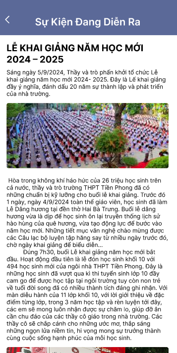
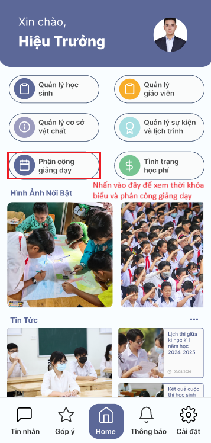
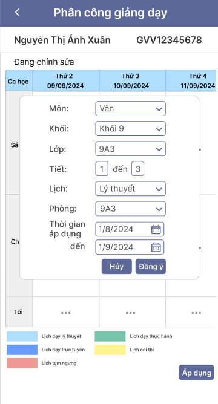
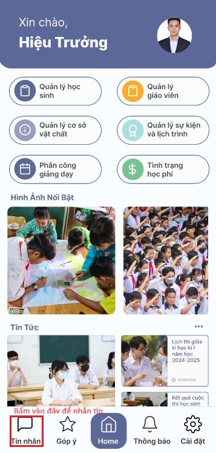

Mục lục
- Tải ứng dụng
-
Dành cho hiệu trưởng
- Hướng dẫn đăng nhập
- Giới thiệu Trang chủ
-
Hướng dẫn sử dụng chức năng
"Quản lý học sinh" -
Hướng dẫn sử dụng chức năng
"Quản lý giáo viên" -
Hướng dẫn sử dụng chức năng
"Quản lý cơ sở vật chất" -
Hướng dẫn sử dụng chức năng
"Quản lý sự kiện và lịch trình" -
Hướng dẫn sử dụng chức năng
"Phân công giảng dạy" -
Hướng dẫn sử dụng chức năng
"Tình trạng học phí" -
Hướng dẫn sử dụng chức năng
"Tin nhắn" -
Hướng dẫn sử dụng chức năng
"Góp ý" -
Hướng dẫn sử dụng chức năng
"Thông báo" -
Hướng dẫn sử dụng chức năng
"Cài đặt"
Kết luận
Hướng dẫn sử dụng App AISchool trên thiết bị di động
I. Tải Ứng Dụng
-
Link tải cho Androi:
-
Link tải cho IOS:
II. Dành Cho Hiệu Trưởng
-
1. Hướng dẫn đăng nhập
Bước 1: Mở ứng dụng AISchool trên thiết bị di động.
Bước 2: Trên màn hình chào mừng, tìm ô nhập liệu có nhãn “Tên đăng nhập” và nhập tên đăng nhập.
Bước 3: Tìm ô nhập liệu có nhãn “Mật khẩu” và nhập mật khẩu.
Bước 4: Sau khi điền đầy đủ thông tin, nhấn vào nút màu xanh “Đăng nhập” để truy cập vào tài khoản.

-
2. Giới thiệu Trang chủ
Trang chủ gồm các chức năng cơ bản như : Quản lý học sinh, Quản lý giáo viên, Quản lý cơ sở vật chất, Quản lý sự kiện và lịch trình, Phân công giảng dạy, Tình trạng học phí, Tin nhắn, Góp ý, Thông báo, Cài đặt. Ngoài ra trên tràn chủ còn hiển thị một số thông tin về Hình ảnh nổi bật của trường, Tin tức, Diễn đàn, Hoạt động ngoại khóa
-
3. Hướng dẫn sử dụng chức năng "Quản lý học sinh"
Chức năng quản lý học sinh giúp Hiệu trưởng dễ dàng theo dõi và quản lý thông tin học sinh một cách hiệu quả, trong chức năng "Quản lý học sinh gồm: Thống kê số học sinh, Thống kê kết quả học tập và Thống kê chuyên cần
Truy cập vào trang chủ nhấn chọn chức năng "Quản lý học sinh"
Có thể xem thống kê học sinh theo học kì
Chọn chức năng muốn xem, ví dụ : Thống kê số học sinh
Khi bấm vào "Thống kê số học sinh" màn hình sẽ hiện tổng số học sinh toàn trường, số học sinh của các khối lớp, khi bấm vào biểu tượng dấu chấm tròn bên phải màn hình ở khối lớp nào sẽ hiển thị thông tin của khối lớp đó.
Màn hình hiển thị danh sách các lớp. Bấm vào "Chi tiết" để xem thêm thông tin
Màn hình hiển thị danh sách học sinh trong lớp đó, tổng số học sinh, số học sinh nam và nữ. Nhấn vào dấu chấm tròn bên phải để hiển thị form thông tin giáo viên chủ nhiệm và thông tin phụ huynh . Khi nhấn vào ảnh đại diện sẽ hiển thị thông tin đầy đủ của học sinh đó.
Thông tin giáo viên chủ nhiệm và phụ huynh, tại đây có thể liên hệ trực tiếp với giáo viên chủ nhiệm và phụ huynh của học sinh
Thông tin chi tiết của học sinh
Khi chọn "Thống kê kết quả học tập" màn hình sẽ hiện tổng số học sinh giỏi, khá, trung bình, yếu của toàn trường. Nhấn vào dấu chấm tròn bên phải màn hình ở khối lớp nào sẽ hiển thị thông tin của khối lớp đó
Danh sách các lớp. Nhấn vào "Chi tiết" để xem thông tin.
Màn hình sẽ hiển thị các thông tin về kết quả học tập của lớp đó. Có thể bấm vào các dấu chấm tròn màu sắc phân loại để xem thông tin
Danh sách học sinh được xếp loại tương ứng sẽ hiện ra. Tại đây Hiệu trưởng có thể liên hệ trực tiếp với học sinh.
Khi chọn "Thống kê chuyên cần" màn hình sẽ hiện thị thống kê điểm danh của toàn trường, số học sinh đúng giờ, trễ, vắng. Nhấn vào dấu chấm tròn bên phải màn hình ở khối lớp nào sẽ hiển thị thông tin của khối lớp đó
Danh sách các lớp. Nhấn vào "Chi tiết" để xem thông tin.
Màn hình sẽ hiển thị các thông tin về thống kê điểm danh của lớp đó. Có thể bấm vào các dấu chấm tròn bên phải tên của học sinh để xem thông tin giáo viên chủ nhiệm và phụ huynh. Bấm vào ảnh đại diện để xem thống kê điểm danh của học sinh đó.
Form thông tin giáo viên và thông tin phụ huynh

Thống kê điểm danh của học sinh. Tại đây có thể biết được học sinh đã đi đúng giờ vào những ngày nào, đi trễ vào những ngày nào và vắng vào ngày nào
Thống kê những ngày đi học đúng giờ
Thống kê những ngày đi học trễ
Thống kê những ngày vắng
-
4. Hướng dẫn sử dụng chức năng "Quản lý giáo viên"
Chức năng "Quản lý giáo viên" giúp Hiệu trưởng dễ dàng theo dõi và quản lý thông tin giáo viên đang giảng dạy tại trường một cách hiệu quả, trong chức năng "Quản lý giáo viên" gồm: Thống kê số giáo viên, Thống kê chuyên cần và Thành tích
Truy cập vào trang chủ nhấn chọn chức năng "Quản lý giáo viên"
Có thể xem thống kê giáo viên theo học kì
Chọn chức năng muốn xem, ví dụ : Thống kê số giáo viên
Khi bấm vào "Thống kê số giáo viên" màn hình sẽ hiện tổng số giáo viên toàn trường, số giáo viên của các khối lớp, khi bấm vào biểu tượng dấu chấm tròn bên phải màn hình ở khối lớp nào sẽ hiển thị thông tin danh sách giáo viên của khối lớp đó.Màn hình hiển thị danh sách giáo viên trong khối lớp đó, tổng số giáo viên, số giáo viên nam và nữ. Khi nhấn vào ảnh đại diện sẽ hiển thị thông tin đầy đủ của giáo viên đó. Tại đây hiệu trưởng có thể liên hệ trực tiếp với giáo viên .

Thông tin chi tiết của giáo viên.
Khi chọn "Thống kê chuyên cần" màn hình sẽ hiện thị thống kê chấm công của giáo viên toàn trường, số giáo viên đúng giờ, trễ, vắng. Mặc định sẽ hiển thị danh sách giáo viên chấm công đúng giờ đầu tiên
Nhấn vào "Trễ" để xem danh sách các giáo viên chấm công trễ, trễ bao lâu và nguyên nhân.
Nhấn vào "Vắng mặt" để xem danh sách các giáo viên vắng mặt và nguyên nhân"
Khi chọn "Thành tích" màn hình sẽ hiện danh sách giáo viên của toàn trường. Có thể xem theo học kì Nhấn vào dấu chấm tròn bên phải màn hình ở giáo viên nào sẽ hiển thị thông tin thành tích của giáo viên đó theo học kì đã chọn.
Thông tin chi tiết thành tích giáo viên đã đạt được trong học kì đã chọn
-
5. Hướng dẫn sử dụng chức năng "Quản lý cơ sở vật chất"
Chức năng "Quản lý cơ sở vật chất" giúp hiệu trưởng kiểm soát và tối ưu hóa việc sử dụng các thiết bị và cơ sở vật chất trong trường học.
Truy cập vào trang chủ nhấn chọn chức năng "Quản lý cơ sở vật chất"
Màn hình sẽ hiển thị các biểu đồ tròn hiển thị tổng quan về số lượng thiết bị và cơ sở vật chất và danh sách các khối lớp. Khi bấm vào khối nào màn hình sẽ hiển thị danh sách các lớp của khối đó. Bấm vào "Chi tiết" để xem thống kê đầy đủ.
Sau khi chọn lớp, màn hình sẽ hiển thị danh sách chi tiết các thiết bị và cơ sở vật chất trong lớp đó. Khi chọn vào icon cây bút bên phải danh sách mỗi thiết bị, màn hình sẽ hiển thị mục “Tình trạng” với các tùy chọn như “Tốt”, “Cần thay thế”. Chọn tình trạng phù hợp để đánh giá tình trạng của các thiết bị.
Nếu chọn "Cần thay thế" màn hình sẽ hiển thị ô "Số lượng" nếu có thiết bị cần thay thế, nhập số lượng vào ô này và ghi chú để nhập bất kỳ ghi chú nào liên quan đến tình trạng thiết bị. Sau khi nhập đầy đủ thông tin, nhấp vào nút “Lưu” để lưu lại các thay đổi.
-
6. Hướng dẫn sử dụng chức năng "Quản lý sự kiện và lịch trình"
Chức năng "Quản lý cơ sở vật chất" giúp hiệu trưởng kiểm soát và dễ dàng theo dõi, quản lý các sự kiện của trường và lịch trình cá nhân và của giáo viên, học sinh
Truy cập vào trang chủ nhấn chọn chức năng "Quản lý sự kiện và lịch trình"
Trong đó bao gồm: Sự kiện đang diễn ra, Sự kiện sắp tới, Lịch họp, Lịch công tác
Màn hình sẽ hiển thị mặc định "Sự kiện đang diễn ra" Hiệu trưởng sẽ thấy danh sách các sự kiện đang diễn ra cùng với ngày, giờ và hình ảnh minh họa. Nhấp vào từng sự kiện để xem chi tiết hơn về nội dung, địa điểm và các thông tin liên quanChi tiết sự kiện
Khi chọn "Sự kiện sắp tới" màn hình sẽ hiển thị danh sách các sự kiện sắp diễn ra cùng với ngày, giờ và hình ảnh minh họa. Nhấp vào từng sự kiện để xem chi tiết hơn về nội dung, địa điểm và các thông tin liên quan. Tại đây hiệu trưởng sẽ có thể thêm sự kiện bằng cách nhấn vào dấu "+" trong màn hình.
Form tạo sự kiện mới

Chi tiết sự kiện sắp tới
Khi chọn "Lịch họp" màn hình sẽ hiển thị danh sách Lịch họp của trường trong ngày, các cuộc họp quan trọng sẽ được tô màu đỏ và các cuộc họp đã qua sẽ được tô màu xám, những cuộc họp bình thường sẽ hiển thị màu xanh
Chọn "Lịch họp của tôi" để xem các lịch họp cá nhân, tại đây Hiệu trưởng có thể tự tạo các lịch họp cá nhân và gửi thông báo tới những người sẽ tham gia cuộc họp
Chọn dấu "+" để tạo cuộc họp
Khi chọn "Lịch công tác" màn hình sẽ hiển thị danh sách Lịch công tác của trường trong ngày, các lịch công tác quan trọng sẽ được tô màu đỏ và các lịch công tác đã qua sẽ được tô màu xám, những lịch công tác bình thường sẽ hiển thị màu xanh
Chọn "Lịch công tác của tôi" để xem các lịch công tác cá nhân, tại đây Hiệu trưởng có thể tự tạo các lịch công tác và gửi thông báo tới những người sẽ tham gia công tác
Chọn dấu "+" để tạo lịch công tác
-
7. Hướng dẫn sử dụng chức năng "Phân công giảng dạy"
Chức năng "Phân công giảng dạy" giúp hiệu trưởng dễ dàng theo dõi và quản lý phân công giảng dạy của các giảng viên, sắp xếp thời khóa biểu cho các khối lớp
Truy cập vào trang chủ nhấn chọn chức năng "Phân công giảng dạy"
Chọn "Thời khóa biểu giáo viên" sẽ hiển thị danh sách các giáo viên, nhấn vào từng giáo viên để xem thời khóa biểu của giáo viên đó.
Trong thời khóa biểu của giáo viên nhấn nút "Chỉnh sửa" để cập nhật thời khóa biểu mới cho giáo viên.

Nhấn vào dấu "..." để thêm lịch
Màn hình sẽ hiển thị form thêm lịch dạy để điền thông tin. Điền đầy đủ thông tin vaò form sau đó nhấn "Đồng ý" để thêm lịch. Sau khi hoàn tất nhấn "Áp dụng", thời khóa biểu mới sẽ được cập nhật và gửi thông báo về cho giáo viên.
Chọn "Thời khóa biểu theo lớp" sẽ hiển thị danh sách các khối lớp, nhấn vào từng khối lớp sẽ hiển thị danh sách các lớp, nhấn vào từng lớp để xem thời khóa biểu của lớp đó. Và chức năng "Chỉnh sửa" giống với việc chỉnh sửa ở thời khóa biểu của giáo viên
-
8. Hướng dẫn sử dụng chức năng "Tình trạng học phí"
Chức năng "Tình trạng học phí" giúp hiệu trưởng dễ dàng theo dõi và quản lý tình trạng học phí của học sinh trong từng lớp học, từ đó đánh giá trình trạng tài chính của trường.
Truy cập vào trang chủ nhấn chọn chức năng "Tình trạng học phí"
Ở phần đầu trang, Hiệu trưởng sẽ thấy các thông tin tổng quan về học phí: Tổng học phí: Tổng số tiền học phí cần thu, Tổng học phí đã thu: Số tiền học phí đã thu được, Tổng học phí chưa thu: Số tiền học phí còn lại chưa thu.
Dưới biểu đồ, Hiệu trưởng sẽ thấy danh sách các khối lớp cùng với trạng thái thanh toán học phí của từng khối.Nhấn vào từng khối để xem chi tiết hơn về tình trạng học phí của từng lớp trong khối đó.

Nhấn vào lớp học sẽ hiển thị danh sách học sinh và trạng thái đóng học phí của học sinh đó. Tại đây có thể liên hệ với giáo viên chủ nhiệm và phụ huynh để hỗ trợ kịp thời
Form thông tin phụ huynh và giáo viên chủ nhiệm, tại đây có thể liên hệ trực tiếp hoặc gửi thông báo.
-
9. Hướng dẫn sử dụng chức năng "Tin nhắn"
Chức năng Nhắn tin cho phép Hiệu trưởng có thể liên lạc riêng với giáo viên, phụ huynh, học sinh, có thể gọi điện và nhắn tin
Chọn chức năng "Tin nhắn" trong trang chủ
Nhấn chọn vào giao diện đoạn tin nhắn để đi đến phần nhắn tin
Tại đây hiệu trưởng có thể trò chuyện, gọi thường(nhấn vào biểu tượng cuộc gọi), hoặc gọi video và gửi file ảnh cho người đang chat

Giao diện gọi điện

Chuyển sang video bằng cách nhấn vào biểu tượng video trong phần gọi điện
Nhấn chọn vào Nhóm chat để đi đến phần nhắn tin theo nhóm, tại đây có nhóm chung cho lớp, nhóm cho bộ môn,...
Tại đây hiệu trưởng có thể trò chuyện, gọi thường(nhấn vào biểu tượng cuộc gọi), hoặc gọi video và gửi file ảnh cho nhiều người đang có trong nhóm

Giao diện gọi điện nhóm

-
10. Hướng dẫn sử dụng chức năng "Góp ý"
Chức năng "Góp ý" giúp hiệu trưởng dễ dàng theo dõi và ghi nhận các ý kiến đóng góp từ phụ huynh và học sinh
Truy cập vào trang chủ nhấn chọn chức năng "Góp ý"
Màn hình sẽ hiển thị danh sách các ý kiến đóng góp. Nhấn vào các ý kiến để xem nội dung .
Nội dung chi tiết ý kiến đóng góp
-
11. Hướng dẫn sử dụng chức năng "Thông báo"
Chức năng xem thông báo giúp hiệu trưởng cập nhật nhanh chóng các thông tin quan trọng từ giáo viên, phụ huynh, học sinh .
Tại giao diện trang chủ Chọn chức năng "Thông báo" .
Trong mục Thông báo, Hiệu trưởng sẽ thấy danh sách các thông báo mới nhất, tại đây Hiệu trưởng có thể tạo thông báo mới bằng cách nhấn vào dấu "+" bên phải màn hình
Nhấp vào từng thông báo để xem chi tiết.
Trong form tạo thông báo Hiệu trưởng có thể chọn đối tượng nhận thông báo.
-
12. Hướng dẫn sử dụng chức năng "Cài đặt"
Chức năng Cài đặt giúp Hiệu trưởng tùy chỉnh và quản lý tài khoản của mình một cách hiệu quả, đồng thời giúp Hiệu trưởng liên hệ với nhà phát triển và nhận được các trợ giúp kịp thời trong quá trình sử dụng ứng dụng.
Tại giao diện trang chủ chọn chức năng "Cài đặt", trong đó có các chức năng như: Cài đặt tài khoản, Đặt lại mật khẩu, Quản lý thiết bị, Giao diện và ngôn ngữ, Giới thiệu về ứng dụng, Thông tin liên hệ, Trợ giúp, Đăng xuất.
Chức năng "Cài đặt tài khoản" : Giúp quản lý thông tin tài khoản của Hiệu trưởng như tên, email, và số điện thoại.
Cách sử dụng: Nhấp vào “Cài đặt tài khoản”, sau đó màn hình sẽ hiển thị thông tin tài khoản của Hiệu trưởng.
Hiệu trưởng có thể thay đổi một số thông tin bằng cách nhấn vào biểu tượng cây bút để chỉnh sửa các thông tin cần thiết và lưu lại.
Chức năng "Đặt lại mật khẩu" : Giúp thay đổi mật khẩu hiện tại của tài khoản Hiệu trưởng, nâng cao tính bảo mật của tài khoản.
Cách sử dụng: Nhấp vào “Đặt lại mật khẩu”, màn hình sẽ hiển thị các ô input để nhập mật khẩu mớiHiệu trưởng cần nhập mật khẩu hiện tại, sau đó nhập mật khẩu mới, xác nhận mật khẩu mới và nhấn nút "Cập nhật" để cập nhật lại mật khẩu
Chức năng "Quản lý thiết bị" : Giúp Hiệu trưởng quản lý các thiết bị đã đăng nhập vào tài khoản của Hiệu trưởng.
Cách sử dụng: Nhấp vào “Quản lý thiết bị” để xem danh sách các thiết bị và đăng xuất khỏi các thiết bị không sử dụng
Màn hình hiển thị danh sách các thiết bị đã đăng nhập, Hiệu trưởng có thể xem thông tin về thiết bị khi nhấn vào dấu "..."

Thông tin về thiết bị đã đăng nhập

Chức năng "Giao diện và ngôn ngữ" : Giúp thay đổi giao diện và ngôn ngữ của ứng dụng.
Cách sử dụng: Nhấp vào “Giao diện và ngôn ngữ” .Chọn giao diện và ngôn ngữ mong muốn, sau đó lưu lại.

Chức năng "Giới thiệu về ứng dụng" : Giúp Hiệu trưởng xem thông tin về phiên bản và nhà phát triển của ứng dụng
Cách sử dụng: Nhấp vào “Giới thiệu về ứng dụng” để xem các thông tin chi tiết.
Tại đây Hiệu trưởng cũng có thể cập nhật phiên bản mới nhất của ứng dụng nhi bấm vào nút "Cập nhật"

Chức năng "Thông tin liên hệ" : Cung cấp thông tin của nhà phát triển và thông tin liên hệ của trường học
Cách sử dụng: Nhấp vào "Thông tin liên hệ" để xem các thông tin cần thiếtThông tin của nhà phát triển
Thông tin của trường
Chức năng "Trợ giúp" : Giúp Hiệu trưởng có thể truy cập vào các tài liệu hướng dẫn và hỗ trợ.
Cách sử dụng: Nhấp vào “Trợ giúp” để xem các tài liệu và liên hệ hỗ trợ nếu cần.
Trong chức năng "Trợ giúp có đường link hướng dẫn sử dụng chi tiết mà Hiệu trưởng có thể tham khảo"

Chức năng "Đăng xuất" : Giúp Hiệu trưởng đăng xuất tài khoản khỏi ứng dụng.
Cách sử dụng: Nhấp vào “Đăng xuất” để thoát khỏi ứng dụng.
VI. Kết luận
AISCHOOL là giải pháp toàn diện cho việc quản lý trường học, mang lại sự tiện lợi và hiệu quả cho cả giáo viên, học sinh và nhà quản lý. Với các tính năng tiên tiến như quản lý thông tin học sinh, theo dõi tiến độ học tập, quản lý thời khóa biểu và nhiều hơn nữa, AISCHOOL giúp tối ưu hóa quy trình quản lý và nâng cao chất lượng giáo dục. Ứng dụng không chỉ giúp giảm bớt gánh nặng công việc hành chính mà còn tạo điều kiện thuận lợi cho việc ra quyết định dựa trên dữ liệu. Với giao diện thân thiện và dễ sử dụng, AISCHOOL là công cụ không thể thiếu cho mọi trường học hiện đại. Hãy trải nghiệm AISCHOOL ngay hôm nay để thấy sự khác biệt và cùng chúng tôi xây dựng một môi trường giáo dục thông minh và hiệu quả hơn.